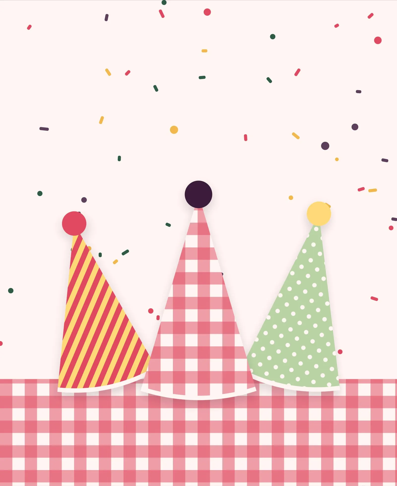
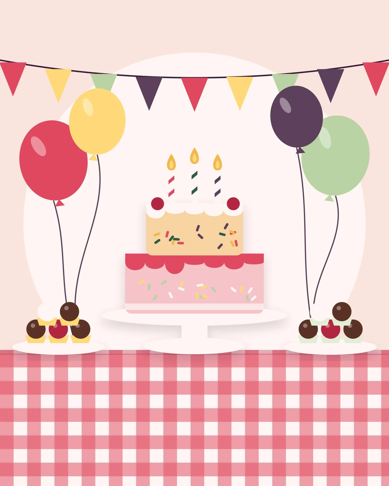
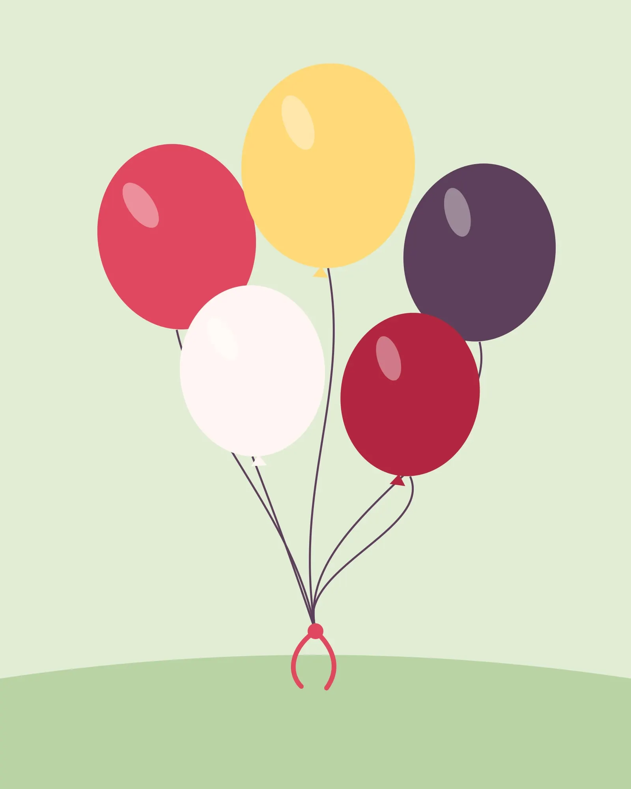
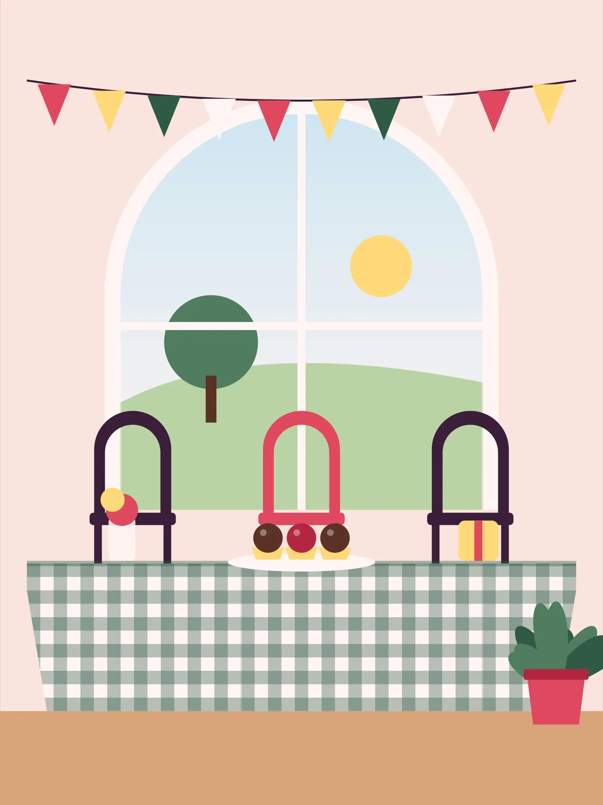
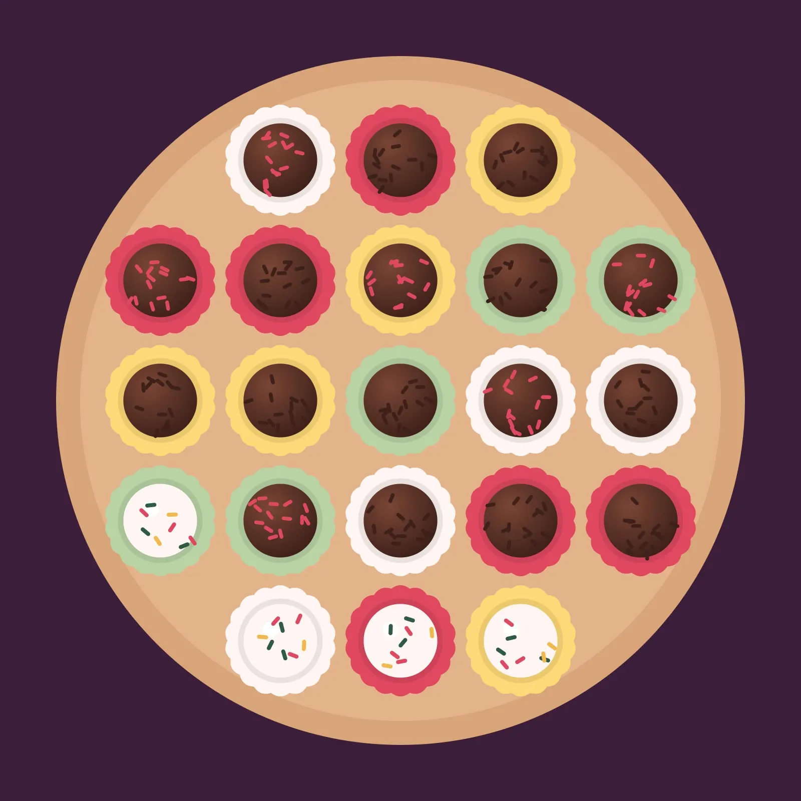
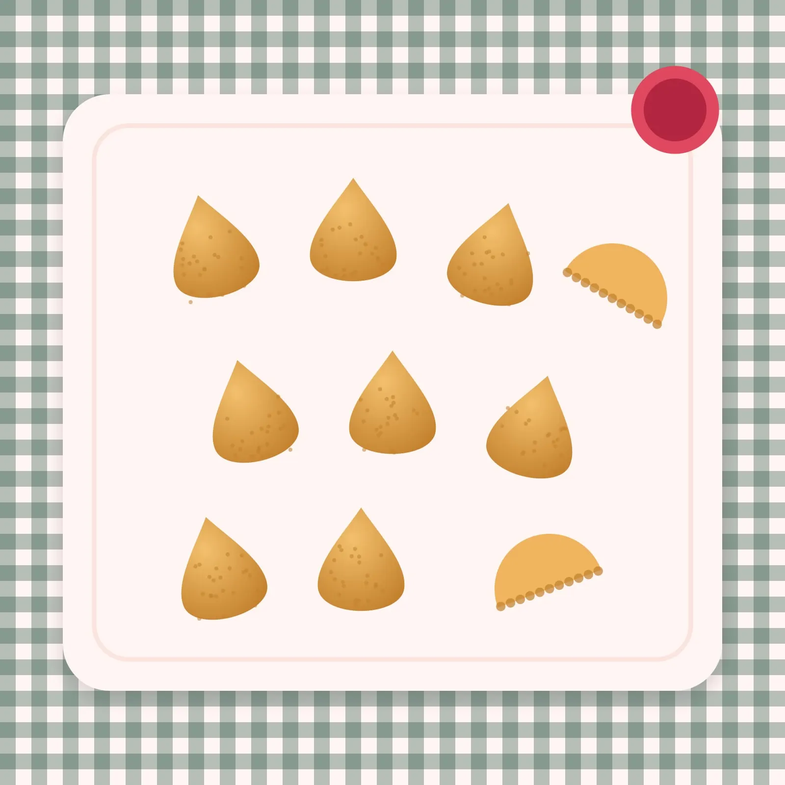

Perto de quem importa
Com menos convidados, a festa acontece de perto: dá para conversar, acompanhar a criança e aproveitar cada momento sem correria.
Buffet infantil em Itu para comemorar com quem é mais próximo, com a comida no centro da festa.


O Villa Fun Itu é um buffet infantil dedicado a festas intimistas: comemorações pensadas para um grupo próximo de família e amigos.
A proposta une o clima de festa à gastronomia afetiva — comida que lembra a mesa de casa e faz parte da memória do dia.
Cada festa é preparada com calma, do primeiro contato ao último docinho. A ideia é que a família chegue, receba os convidados e aproveite o dia sem se preocupar com os detalhes.



Com menos convidados, a festa acontece de perto: dá para conversar, acompanhar a criança e aproveitar cada momento sem correria.

Na gastronomia afetiva, a comida não é um detalhe: é parte da lembrança que a família leva da festa.
O que você encontra no Villa Fun para planejar a festa.
Consultar data (abre pelo Direct do Instagram em nova aba)Buffet infantil para aniversários com um grupo próximo de convidados.
Salgados feitos na hora, pratos com gosto de casa e uma mesa de doces caprichada — comida para lembrar da festa.
Mesa decorada de acordo com o tema escolhido pela família, com atenção aos detalhes e às cores da festa.
Brincadeiras e acompanhamento para as crianças, enquanto os adultos aproveitam a festa por perto.
Conte a data que você imagina e quantos convidados pretende chamar.
O Villa Fun responde com a disponibilidade e as opções de cardápio e decoração.
Combine os detalhes da festa e confirme a reserva da data.
Os detalhes que fazem o clima de uma festa intimista.
Não encontrou o que procura? Pergunte ao Villa Fun (abre pelo Direct do Instagram em nova aba)
Festas infantis intimistas, com gastronomia afetiva.
Envie uma mensagem pelo Direct do Instagram @villafun_itu com a data desejada e o número de convidados.
Em Itu (SP).
O Villa Fun é pensado para festas com um grupo próximo de convidados. Conte quantas pessoas pretende chamar e indicamos o formato ideal.
Cada festa é montada com a família: cardápio, decoração e recreação são definidos no orçamento, de acordo com a comemoração.
As condições de pagamento são apresentadas junto com o orçamento.
Quanto antes, melhor — principalmente para fins de semana. Envie a data desejada para consultar a disponibilidade.
Fale com o Villa Fun para consultar datas e montar a comemoração.
Consultar data (abre pelo Direct do Instagram em nova aba)Atendimento pelo Direct do Instagram.
Localização
Itu – SP